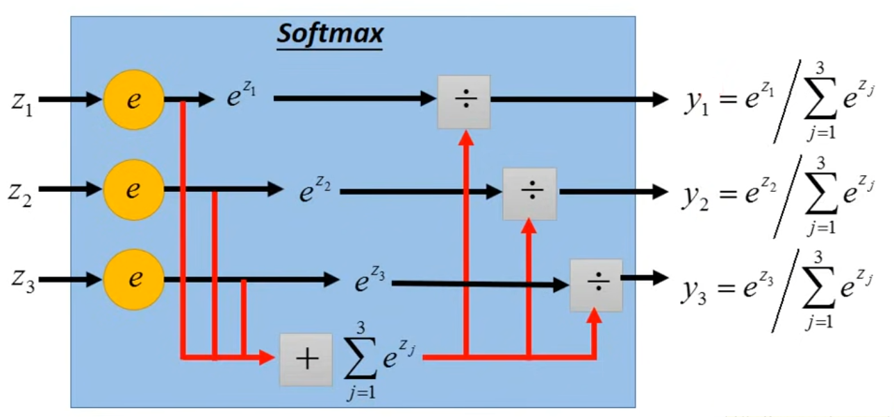
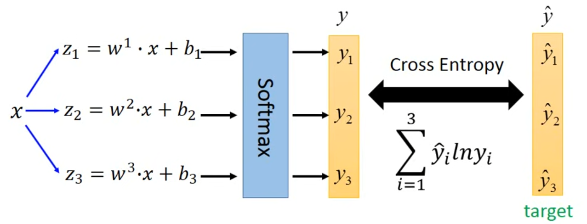
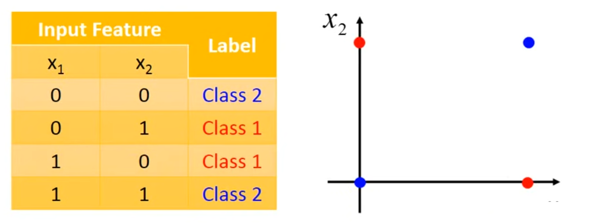
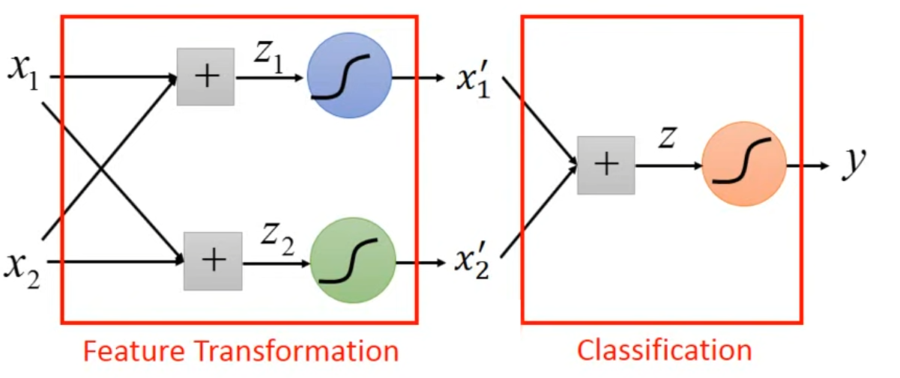

Generative Model
假设有两个类别class1和class2，从class1中抽取一个样本的概率为$P(C_1)$，从class2中抽取一个样本的概率为$P(C_2)$。现给定一个x，求其属于哪个class，即求$P(C_1|x)$或$P(C_2|x)$（posterior probability）。
根据Bayes公式，有：
其中$P(C_1)$和$P(C_2)$叫做Prior；$P(x|C_1)$为$C_1$产生$x$的概率，$P(x|C_2)$为$C_2$产生$x$的概率。如果$P(C_1|x)>0.5$，则代表这个$x$属于$C_1$；反之则属于$C_2$。
在这个公式中，$P(C_1)$和$P(C_1)$都是非常容易求得的，重点在于$P(x|C_1)$和$P(x|C_2)$。下面我们假设$C_1$和$C_2$都是从一个Gaussion Distribution中sample出来的。
[scode type=”share”]Gaussion Ditribution
其中$\mu$为样本mean，$\Sigma$为样本covariance matrix[/scode]
只要我们找到了这样的一个Gaussion Ditribution，然后将$x$的代入概率密度函数，即可得到$P(x|C_1)$和$P(x|C_2)$。
Maximum Likelihood
那么如何找到它的密度函数呢？使用Maximum Likelihood的方法。
一个mean为$\mu$、covariance matrix为$\Sigma$的Gaussion Distribution的Likelihood为它sample出$x^1,x^2,…,x^N$的概率。我们用$L(\mu,\Sigma)$来表示Likelihood，有：
那么我们要找到$\mu^,\Sigma^$，使得$L(\mu,\Sigma)$最大，即：
最终解为：
那么此时，将$x$分别代入class1和class2的密度函数，即可得到$P(x|C_1)$和$P(x|C_2)$：
实际使用中，往往多个class的Gaussion Distribution采用相同的$\Sigma$，因为covariance matrix的元素个数是class feature数量的平方，当feature较多时，如果采用不同的covariance matirx，会使得parameter数量增长非常快，容易导致over fitting。
这时，计算Likelihood的方法为：
其中$x^1,x^2,…,x^k$来自class1；$x^{k+1},x^{k+2},…,x^N$来自class2。
此时$\mu^$的算法同上，$\Sigma^$的解为：
这样得到的两个class的boundary是linear的，而使用不同的covariance matrix得到的boundary是non-linear的。
以上计算以Gaussion Distribution为例，但实际使用中需要根据背景选择合适的distribution。例如如果某一个feature是binary的，那么就应该选择Bernoulli distribution；如果所有dimension都是独立产生的，那么就应该选择Naive Bayes Classifier。
对于Posterior Probability的思考
我们对Posterior Probability的计算公式进行进一步推导：
其中：
有：
那么可以得到：
展开后代入$z$得：
在我们取相同的covariance matrix的情况下，上式可以化简为：
进一步化简为：
我们将$(\mu^1-\mu^2)^T\Sigma^{-1}$记作$W^T$，由于$-\frac{1}{2}(\mu^1)^T(\Sigma^1)^{-1}\mu^1+\frac{1}{2}(\mu^2)^T(\Sigma^2)^{-1}\mu^2+ln\frac{N_1}{N_2}$是一个scalar，记作$b$。于是我们得到了最终的表达式：
从这里也能看出，为什么共用$\Sigma$的时候，boundary是linear的。
上述Classification叫做Generative Model。在Generative Model中，我们会计算$N_1,N_2,\mu^1,\mu^2,\Sigma$，得到结果后，代入上式，即可得到结果。
Discriminative Model
Two-class Classification
上文我们最后总结了Posterior Probability的表达式：
并且用数学推导的方式得到了最终结果，下文我们将使用Gradient Descent方法求解。
给出如下training data：
|$x^1$|$x^2$|$x^3$|…|$x^N$|
|:-:|:-:|:-:|:-:|:-:|
|$C_1$|$C_1$|$C_2$|…|$C_1$|
training data的形式为：$(x^n,\hat{y}^n$，其中$\hat{y}^n=1$代表其属于$C_1$，$\hat{y}^n=0$代表其属于$C_2$。
我们假设这组data是基于$f_{w,b}=P_{w,b}(C_1|x)$产生的，现在要找到一组$w,b$，使得其最有可能产生这组data。
根据Generative Model的学习，我们可以定义Likelihood函数：
我们要求：
对其进行变形，可得：
进一步推导，得到：
即：
综上所述，我们定义了Model：$f_{w,b}(x)=\sigma(\sum\limits_iw_ix_i+b)=\frac{1}{1+exp(-z)}$，其中$z=wx+b=\sum\limits_iw_ix_i+b$。然后，我们可以使用Gradient Descent对其进行Optimization。接下来求解$\frac{\partial -lnL(w,b)}{\partial w_i}$：
其中：
而：
则：
同理可求得：
最后，将其代入原式，得到：
至此，我们得到了Gradient Descent的公式：
从式子中观察知：$\hat{y}^n$和$f_{w,b}(x^n))x_i^n$的差距越大，则更新的就越大。
[scode type=”yellow”]对于Logistic Regression，应使用cross entropy作为Loss，使用Square Error效果不好。[/scode]
上面的Model叫做Discriminative Model，同Generative Model相比，虽然其使用的是同一个function set，但最终会得到不同的$w,b$。
Generative Model的优势：
- With the assumption of probability distribution,less training data is needed;
- With the assumption of probability distribution,more robust to the noise;
- Priors and class-dependent probability can be estimated from different source.（Discriminative Model首先假设一个概率分布，然后直接找到其中的parameters；而Generative Model将整个过程拆分为Priors和class-dependent probability，可以分别求解。例如在语音辨识中，Priors可以由文字data得到，class-dependent probability需要结合文字data和语音data得到）。
Multi-class Classification
以三个类别$C_1,C_2,C_3$为例，其中$C_1$对应parameters为$w^1,b^1$，$C_2$对应parameters为$w^2,b^2$，$C_3$对应parameters为$w^3,b^3$。给定一个$x$，有：
然后将output经过一个softmax：

将softmax的output与traning data的label做Cross Entropy，得到：

其中，如果$x∈C_1$，y=$\begin{bmatrix}1 \ 0 \ 0\end{bmatrix}$；如果$x∈C_2$，y=$\begin{bmatrix}0 \ 1 \ 0\end{bmatrix}$；如果$x∈C_3$，y=$\begin{bmatrix}0 \ 0 \ 1\end{bmatrix}$。
Limitation of Logistic Regression
以二分类为例，其boundary是一条直线。考虑如下例子：

Logistic Regression无法合理的区分这两个Class。因为样本点不是线性可分的。
解决方法：Feature Transformation(Cascading Logistic Regression Model)
如下图所示：

通过Feature Transformation，可以将原来线性不可分的样本点转化为线性可分的，然后就能使用Logistic Regression进行classification了。